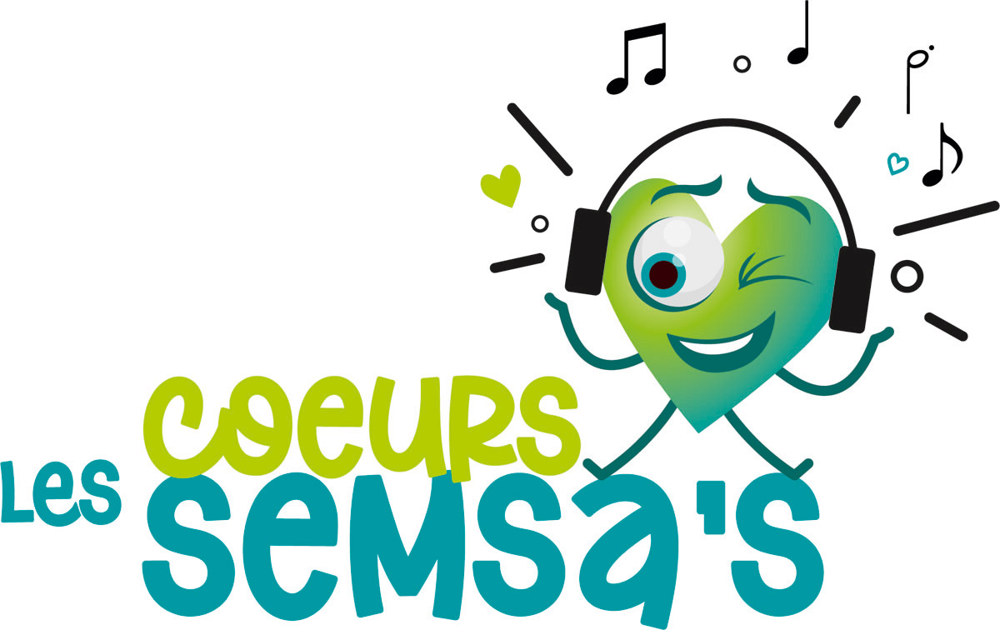
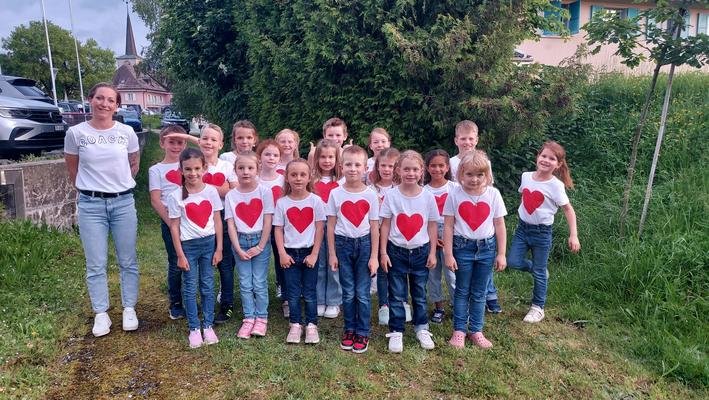
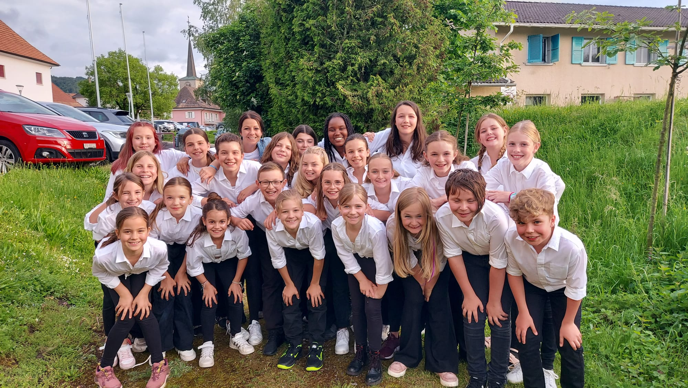
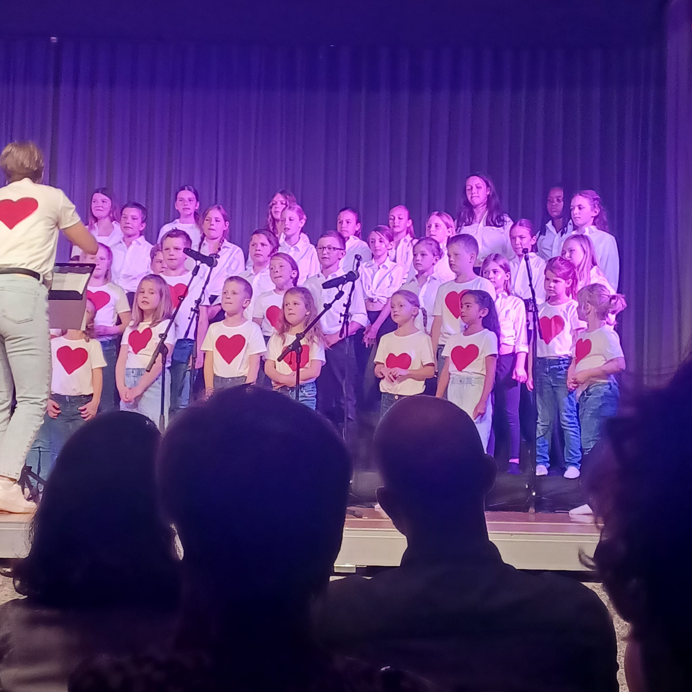
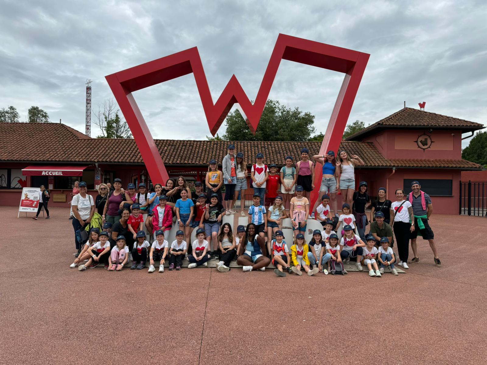
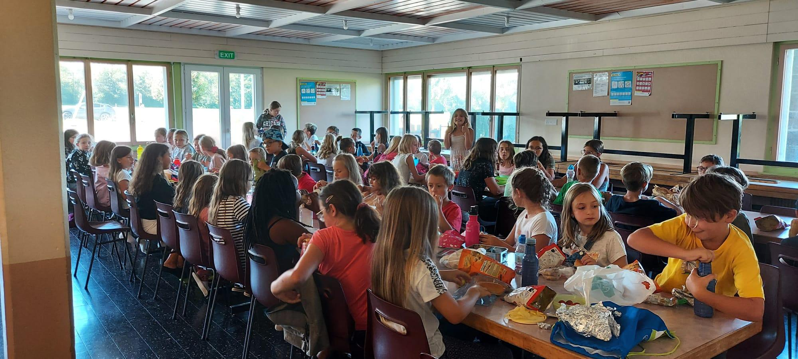

Présentation
Fondé en 1982 par M. Raphaël Droux, le choeur d'enfants de Semsales suit sont petit bout de chemin.
- Pour son 20ème anniversaire, le choeur d'enfants a invité les anciens membres et créé un concert sur le
thème des prénoms sur une mise en scène de Mireille Balmat.
A cette occasion, un nouveau logo ainsi qu'un nouveau nom moins anonyme "LES COEURS SEMSA'S" ont
été inaugurés.
Ce logo, inventé par M.Bruno Yerly de la Tour-de-Trême, représente la vieille tour et la tour de l'église
actuelle se serrant la main sur une clé de sol et une portée remplie de notes en forme de coeurs...
- Pour son 25ème anniversaire, les écoles primaires de Semsales et le choeur d'enfants n'ont fait plus
qu'un en créant le spectacle du "Musée enchanté", mis en scène par René Gothuey.
- Pour son 40ème anniversaire, le chœur d’enfants a de nouveau invité les anciens membres pour 2 soirs de
spectacles et un repas d’anniversaire. En 1 ère partie, le petit chœur a été à la rencontre du monde des animaux.
Et en 2 ème partie, le grand chœur accompagné de ses anciens membres a parcouru les tubes de ces 40 dernières
années. De plus, nous avons profité de changer notre logo en lui donnant un coup de peps grâce à l’agence de
publicité Point Carré !


Le chœur est divisé en 2 groupes depuis quelques années :
1) Le petit chœur Semsa's : enfants de la 1ère enfantine à la 2ème primaire
2) Le grand chœur Semsa's : enfants de la 3ème primaire jusqu'à la 1ère
année du CO (ou plus si désir !!)
L'effectif est en moyenne d'une quarantaine d'enfants qui assurent une répétition hebdomadaire
d'une heure ou une heure 1/2 selon les besoins durant l'année scolaire.
Les objectifs annuels du chœur sont constitués de petites prestations locales (homes pour
personnes âgées, fête villageoise, rencontre avec d'autres chorales, etc.); en
décembre d'un concert de l'avent et au printemps du concert annuel.
Le but principal est de former une grande famille où il fait bon se retrouver pour la joie de chanter et
d'être ensemble.
Comité
|
Présidente : Vice-présidente et secrétaire: : Caissière : Membres : |
Alexandra Gothuey Aurélie Chassot Christine Genoud Claudine Guisolan Mélanie Giller Vincent Huwiler Johan Grivet |
Directrice |
|
|
Grand Chœur : Petit Chœur : |
Maude Giller Frédérique Vuadens |
Nos musiciens
|
Pianiste: Guitariste: Bassiste: Batterie/Percussion: |
Raphaël Droux Roger Guisolan Denis Grand Bernard Richoz |
Agenda
Assemblée: mercredi 12 novembre 2025
Loto: vendredi 28 novembre 2025
Week-end musical: samedi 14 et dimanche 15 mars 2026
Concerts: vendredi 15 et samedi 16 mai 2026
Fête des musiques: samedi 23 mai 2026
Divers




Tous les membres du comité se tiennent à votre disposition pour toutes sortes d'autres
renseignements et se feront un plaisir de répondre à vos questions !!!!
N'hésitez pas pas à prendre contact avec nous !!
Pour tout renseignements :
Présidente : Alexandra Gothuey au 079 359 10 51
Secrétaire : Aurélie Chassot au 079 370 62 22
E-mail : coeursemsas@gmail.com